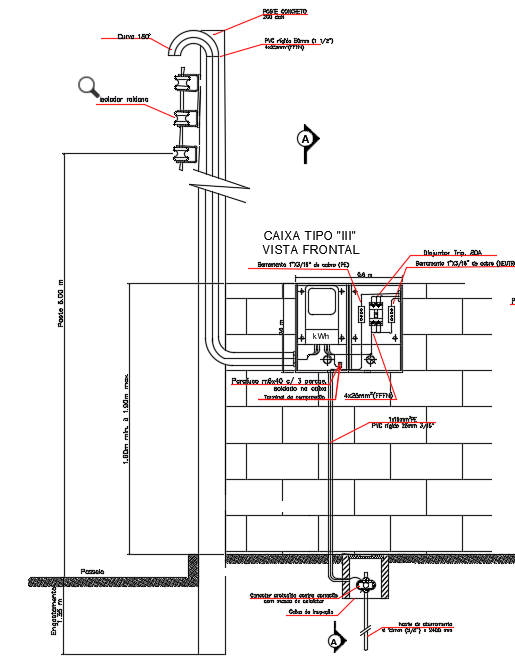
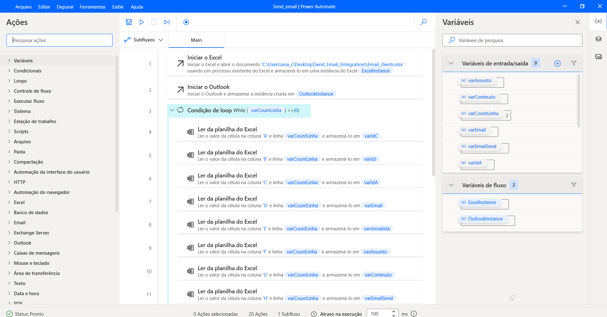

© 2023 by Ana Carolina Salvador da Silva.
My names is Ana Carolina I am electrotechnical technical
and estuding eletrical engineer in UFScar.
Since 2015 I work with eletrical project where I using autocad and sketchup and
during graduate I started made projects using some simulation software
like proteus and SolidWorks, using too program language like python,
matlab,c,c#,vba and some others.
Recently I start make some automation using power apps,power automate,
flow at sharepoint,power BI, acess and excel
Here I ll show some projects but, if you want know some more contact me.
© 2023 by Ana Carolina Salvador da Silva.
Academic |
INSTITUIÇÃO FEDERAL DE EDUCAÇÃO CIÊNCIA E TECNOLOGIA DE SÃO PAULO |
Skills |
· Office pack – advanced |
Academic |
| BAJA UFSCAR | EXTESION PROJECT | 04/2017-03/2018 |
Professional |
ELETROTECHICAL INTERN |05/2015-08/2016 |
|  |
Residential power entrance renovation project, using cabinet type 3 |
|  |
Automation project to send e- mail by gmail/outlook automatically. |
.gif)